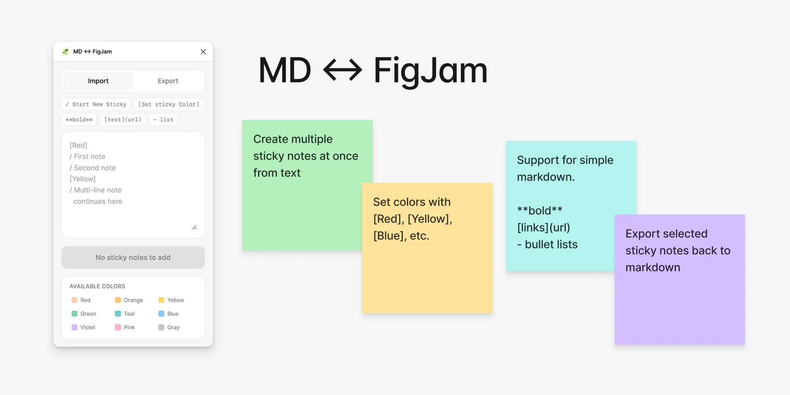

A recurring friction in my work is the gap between thinking space and output space. FigJam is where I do a lot of divergent work—synthesis, affinity mapping, workshop facilitation—but the content that lives there rarely stays there. It needs to move outward: into documents, presentations, research repositories, or prompts for AI tools. And content from those places needs to move in. The interface for doing this has always been the problem. Selecting and copying sticky notes in FigJam gives you plain text with no structure. Recreating stickies from a list means clicking, pasting, clicking, pasting.
So I made a small FigJam plugin called MD ↔ FigJam to solve an annoyance I kept hitting: getting structured content in and out of sticky notes without endless clicking.
You write in a simple markdown-ish format, define colours inline with [Yellow], and it generates the stickies in a grid. Select stickies, and it exports back to the same format.
Useful for workshop prep, importing research notes, or just not wanting to create 40 stickies by hand.
Free on the Figma Community: MD ↔ FigJam